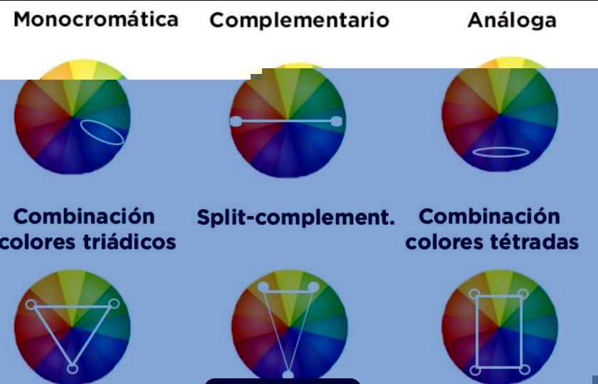

Armonia del color
Es el resultado visual de las reglas de las ruedas de color. Para crear una verdadera armonia de color en el diseño de interior, es importante comprender cuales combinan bien justo y por que
Tipos de armonia
-
Monocromatico: un solo color dividido en diferetes valores.
-
Analogo:un pequeño grupo de colores adyacentes en la rueda.
-
Complementario: dos tonos que se encuentran uno enfrente a otro en la rueda de color.
-
complementario dividido: un trio en el que uno se encuentra enfrente de dos tonos dyacentes a su complementario
-
Triadico: tres colores que son equidistantes entre si en la rueda de color.
-
Tetradico: (doble complementario): 2 pares de colores complementarios.
